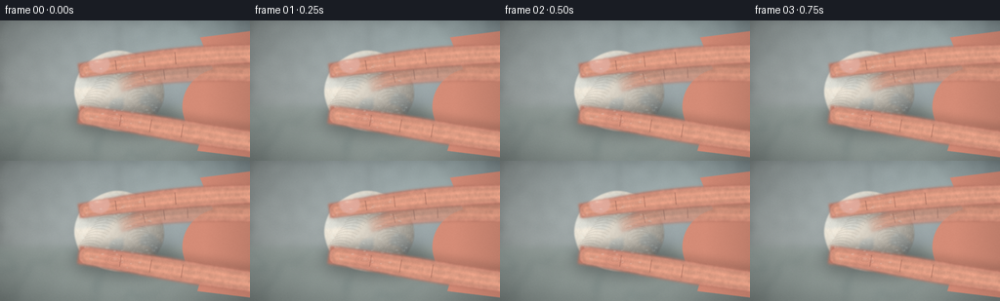
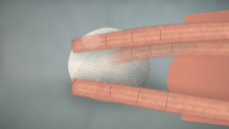
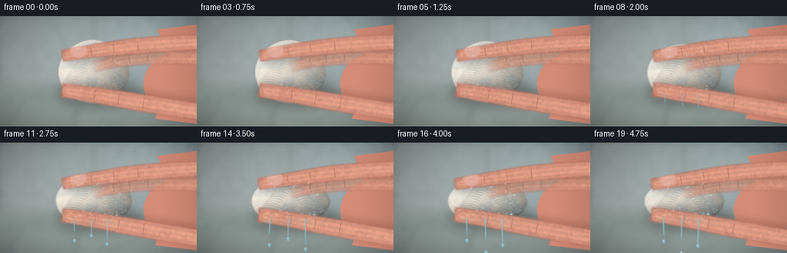
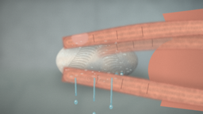

CODING AGENTS AS PIXEL WORLD MODELS
traex/DeepSeek-V4.1-Flash · mechanics_0016
点击播放 · 原生 RGB 像素
逐轮保存的候选
回放视频、检查图与代码变化。
每份候选均可单独播放。实际图片检查记录在下方工具轨迹中。
候选 01播放与检查图
点击播放 · 原生 RGB 像素


展开代码变化
--- 上一保存版本
+++ 本次保存版本
@@ -0,0 +1,627 @@
+from __future__ import annotations
+
+import math
+from pathlib import Path
+
+import numpy as np
+from PIL import Image, ImageDraw, ImageFilter
+from scipy.ndimage import gaussian_filter, map_coordinates
+
+import artifact_io
+
+
+ROOT = Path(__file__).resolve().parent
+WIDTH, HEIGHT = 256, 144
+SCALE = 4
+W, H = WIDTH * SCALE, HEIGHT * SCALE
+FRAMES = 20
+FPS = 4.0
+RNG = np.random.default_rng(1601)
+
+
+def smoothstep(edge0: float, edge1: float, x: float) -> float:
+ t = np.clip((x - edge0) / (edge1 - edge0), 0.0, 1.0)
+ return t * t * (3.0 - 2.0 * t)
+
+
+def lerp(a, b, t):
+ return a + (b - a) * t
+
+
+def cubic_bezier(points, samples=100):
+ points = np.asarray(points, dtype=np.float64)
+ t = np.linspace(0.0, 1.0, samples)[:, None]
+ omt = 1.0 - t
+ curve = (
+ omt**3 * points[0]
+ + 3.0 * omt**2 * t * points[1]
+ + 3.0 * omt * t**2 * points[2]
+ + t**3 * points[3]
+ )
+ return curve
+
+
+def noise_field(shape, sigma, seed):
+ rng = np.random.default_rng(seed)
+ raw = rng.normal(0.0, 1.0, shape)
+ field = gaussian_filter(raw, sigma=sigma, mode="reflect")
+ field -= field.min()
+ field /= max(field.max(), 1e-6)
+ return field
+
+
+def poly_mask(size, points):
+ mask = Image.new("L", size, 0)
+ draw = ImageDraw.Draw(mask)
+ draw.polygon(points, fill=255)
+ return np.asarray(mask, dtype=np.float32) / 255.0
+
+
+def ellipse_mask(size, box, blur=0):
+ mask = Image.new("L", size, 0)
+ draw = ImageDraw.Draw(mask)
+ draw.ellipse(box, fill=255)
+ if blur:
+ mask = mask.filter(ImageFilter.GaussianBlur(blur))
+ return np.asarray(mask, dtype=np.float32) / 255.0
+
+
+def composite(base, layer, alpha):
+ alpha = np.clip(alpha, 0.0, 1.0)[..., None]
+ return base * (1.0 - alpha) + layer * alpha
+
+
+def variable_stroke_mask(size, curve, widths, blur=1.0):
+ """Rasterize a thick tapered curve by stamping soft ellipses."""
+ mask = Image.new("L", size, 0)
+ draw = ImageDraw.Draw(mask)
+ n = len(curve)
+ for i, ((x, y), width) in enumerate(zip(curve, widths)):
+ if i == 0:
+ dx, dy = curve[min(1, n - 1)] - curve[0]
+ elif i == n - 1:
+ dx, dy = curve[-1] - curve[-2]
+ else:
+ dx, dy = curve[i + 1] - curve[i - 1]
+ length = math.hypot(dx, dy) + 1e-6
+ nx, ny = -dy / length, dx / length
+ half = width * 0.50
+ r = max(1.0, width * 0.50)
+ # A polygon spans neighboring stamps, leaving no scalloped edge.
+ angle = math.atan2(dy, dx)
+ ca, sa = math.cos(angle), math.sin(angle)
+ corners = []
+ for along, across in ((-r, -half), (r, -half), (r, half), (-r, half)):
+ corners.append((x + along * ca - across * sa, y + along * sa + across * ca))
+ draw.polygon(corners, fill=255)
+ draw.ellipse((x - r, y - r, x + r, y + r), fill=255)
+ if blur:
+ mask = mask.filter(ImageFilter.GaussianBlur(blur))
+ return np.asarray(mask, dtype=np.float32) / 255.0
+
+
+def make_background():
+ yy, xx = np.mgrid[0:H, 0:W].astype(np.float32)
+ nx = xx / W
+ ny = yy / H
+
+ # Soft, cool bathroom wall above a pale ceramic sink ledge.
+ wall = np.zeros((H, W, 3), dtype=np.float32)
+ wall[..., 0] = 174 - 20 * nx + 8 * ny
+ wall[..., 1] = 185 - 14 * nx + 4 * ny
+ wall[..., 2] = 184 - 8 * nx + 4 * ny
+
+ tile_noise = noise_field((H, W), 11.0, 11)
+ wall *= (0.90 + 0.10 * tile_noise[..., None])
+ tile = 122 * SCALE
+ gx = np.abs(((xx + tile / 2) % tile) - tile / 2)
+ gy = np.abs(((yy + tile / 2) % tile) - tile / 2)
+ grout = np.clip(1.0 - np.minimum(gx, gy) / (2.2 * SCALE), 0.0, 1.0)
+ wall *= (1.0 - 0.12 * grout[..., None])
+
+ # A broad out-of-focus window reflection creates depth without distracting.
+ glow = np.exp(-(((nx - 0.80) / 0.25) ** 2 + ((ny - 0.12) / 0.32) ** 2))
+ wall += glow[..., None] * np.array([18.0, 20.0, 18.0])
+
+ ledge_y = 0.61 * H
+ ledge = smoothstep(ledge_y - 2 * SCALE, ledge_y + 2 * SCALE, yy)
+ ceramic = np.zeros_like(wall)
+ ceramic[..., 0] = 164 + 10 * (1.0 - ny)
+ ceramic[..., 1] = 177 + 9 * (1.0 - ny)
+ ceramic[..., 2] = 173 + 8 * (1.0 - ny)
+ marble = noise_field((H, W), 28.0, 14)
+ veins = np.abs(np.sin((xx * 0.009 + yy * 0.016) + 5.0 * marble))
+ ceramic *= (0.93 + 0.07 * marble[..., None])
+ ceramic -= (veins > 0.985)[..., None] * np.array([12.0, 10.0, 9.0])
+
+ bg = wall * (1.0 - ledge[..., None]) + ceramic * ledge[..., None]
+
+ # Soft contact shadow under the hand and cotton.
+ shadow = np.exp(-(((nx - 0.48) / 0.25) ** 2 + ((ny - 0.72) / 0.10) ** 2))
+ bg *= (1.0 - 0.20 * shadow[..., None])
+ vignette = np.clip(1.0 - 0.40 * (((nx - 0.5) / 0.7) ** 2 + ((ny - 0.47) / 0.8) ** 2), 0.58, 1.0)
+ bg *= vignette[..., None]
+
+ image = Image.fromarray(np.clip(bg, 0, 255).astype(np.uint8))
+ image = image.filter(ImageFilter.GaussianBlur(3.2 * SCALE))
+ return np.asarray(image, dtype=np.float32)
+
+
+def cotton_geometry(pressure):
+ cx = 0.475 * W
+ cy = 0.505 * H + 4.0 * SCALE * pressure
+ rx = (47.0 + 6.0 * pressure) * SCALE
+ ry = (43.0 - 13.0 * pressure) * SCALE
+ return cx, cy, rx, ry
+
+
+def make_cotton_texture(cx, cy, rx, ry, pressure, frame_index):
+ yy, xx = np.mgrid[0:H, 0:W].astype(np.float32)
+ dx = (xx - cx) / rx
+ dy = (yy - cy) / ry
+ angle = 0.055 * math.sin(frame_index * 0.38)
+ ca, sa = math.cos(angle), math.sin(angle)
+ u = ca * dx + sa * dy
+ v = -sa * dx + ca * dy
+
+ cloud = noise_field((H, W), 10.0 * SCALE, 41)
+ cloud2 = noise_field((H, W), 3.2 * SCALE, 42)
+ edge_irregularity = (cloud - 0.5) * 0.10 + (cloud2 - 0.5) * 0.025
+ radial = u * u + v * v
+ edge = smoothstep(1.0, 0.90, radial + edge_irregularity)
+ edge *= smoothstep(1.25, 0.93, np.sqrt(radial + 0.05 * edge_irregularity))
+ edge = np.clip(edge, 0.0, 1.0)
+
+ # Rounded cotton volume, with small fluffy lobes and pressure folds.
+ dome = np.sqrt(np.clip(1.0 - radial, 0.0, 1.0))
+ grain = noise_field((H, W), 1.2 * SCALE, 43)
+ fiber_grain = noise_field((H, W), 0.55 * SCALE, 44)
+ folds = 0.5 + 0.5 * np.sin(17.0 * v + 5.5 * u + pressure * 7.0)
+ folds *= smoothstep(0.12, 0.80, radial) * pressure
+
+ base = np.zeros((H, W, 3), dtype=np.float32)
+ base[..., 0] = 236.0 + 10.0 * dome - 8.0 * folds
+ base[..., 1] = 232.0 + 8.0 * dome - 10.0 * folds
+ base[..., 2] = 220.0 + 7.0 * dome - 9.0 * folds
+
+ light = np.clip(0.78 + 0.28 * (-0.75 * u - 0.60 * v + 0.45 * dome), 0.55, 1.17)
+ base *= light[..., None]
+ base += ((grain - 0.5) * 14.0 + (fiber_grain - 0.5) * 7.0)[..., None]
+
+ # Wet translucent patches absorb a little light and cool the color.
+ wet = noise_field((H, W), 5.2 * SCALE, 48)
+ wet = smoothstep(0.55 - 0.16 * pressure, 0.78 - 0.10 * pressure, wet)
+ wet *= edge
+ base[..., 0] -= 15.0 * wet
+ base[..., 1] -= 7.0 * wet
+ base[..., 2] -= 1.0 * wet
+
+ # Occlusion at the two pinching contacts.
+ top_contact = np.exp(-(((xx - 0.455 * W) / (0.22 * W)) ** 2 + ((yy - 0.345 * H) / (0.12 * H)) ** 2))
+ low_contact = np.exp(-(((xx - 0.455 * W) / (0.22 * W)) ** 2 + ((yy - 0.680 * H) / (0.12 * H)) ** 2))
+ base *= (1.0 - (0.17 + 0.08 * pressure) * top_contact)[..., None]
+ base *= (1.0 - (0.14 + 0.08 * pressure) * low_contact)[..., None]
+
+ return np.clip(base, 0, 255), edge, wet
+
+
+def add_cotton_fibers(image, mask, cx, cy, rx, ry, pressure, frame_index):
+ layer = Image.new("RGBA", (W, H), (0, 0, 0, 0))
+ draw = ImageDraw.Draw(layer)
+ rng = np.random.default_rng(81 + frame_index // 4)
+ count = 1650
+ for _ in range(count):
+ ang = rng.uniform(0.0, math.tau)
+ radius = math.sqrt(rng.uniform(0.02, 0.98))
+ x = cx + math.cos(ang) * rx * radius
+ y = cy + math.sin(ang) * ry * radius
+ tangent = ang + math.pi / 2.0 + rng.normal(0.0, 0.35)
+ length = rng.uniform(0.8, 4.5) * SCALE
+ bend = rng.normal(0.0, 0.35)
+ x1 = x + math.cos(tangent) * length * 0.5
+ y1 = y + math.sin(tangent) * length * 0.5
+ x2 = x - math.cos(tangent + bend) * length * 0.5
+ y2 = y - math.sin(tangent + bend) * length * 0.5
+ if rng.random() < 0.56:
+ color = (251, 247, 232, int(rng.uniform(22, 65)))
+ else:
+ color = (157, 151, 138, int(rng.uniform(16, 50)))
+ draw.line((x2, y2, x1, y1), fill=color, width=max(1, int(SCALE * 0.32)))
+
+ # Pressure folds appear as darker curved fibers around the pinch.
+ for side in (-1, 1):
+ for i in range(12):
+ ox = cx + side * (7 + i * 2.2) * SCALE
+ oy = cy + (i - 5.5) * 3.0 * SCALE
+ draw.arc(
+ (ox - 12 * SCALE, oy - 5 * SCALE, ox + 12 * SCALE, oy + 7 * SCALE),
+ 205,
+ 335,
+ fill=(132, 126, 116, int((35 + 30 * pressure))),
+ width=max(1, SCALE),
+ )
+
+ arr = np.asarray(layer, dtype=np.float32)
+ alpha = arr[..., 3:4] / 255.0 * mask[..., None]
+ return image * (1.0 - alpha) + arr[..., :3] * alpha
+
+
+def finger_curves(pressure, frame_index):
+ squeeze_y = 3.0 * SCALE * pressure
+ drift_x = 1.2 * SCALE * math.sin(frame_index * 0.26)
+
+ index = cubic_bezier(
+ (
+ (1.10 * W, 0.235 * H),
+ (0.78 * W, 0.225 * H + 2.0 * SCALE),
+ (0.54 * W, 0.295 * H + squeeze_y),
+ (0.345 * W + drift_x, 0.350 * H + squeeze_y),
+ ),
+ 130,
+ )
+ thumb = cubic_bezier(
+ (
+ (1.10 * W, 0.885 * H),
+ (0.82 * W, 0.850 * H - 4.0 * SCALE),
+ (0.57 * W, 0.735 * H - squeeze_y),
+ (0.350 * W + drift_x, 0.680 * H - squeeze_y),
+ ),
+ 130,
+ )
+ return index, thumb
+
+
+def finger_widths(curve, base_width, tip_width):
+ t = np.linspace(0.0, 1.0, len(curve))
+ widths = lerp(base_width, tip_width, smoothstep(0.28, 1.0, t))
+ widths += 2.0 * SCALE * np.sin(np.pi * t) ** 2
+ return widths
+
+
+def paint_finger(image, mask, curve, widths, nail=False, thumb=False, frame_index=0):
+ yy, xx = np.mgrid[0:H, 0:W].astype(np.float32)
+ # Distance to nearby curve samples controls cylindrical shading.
+ sample_ids = np.linspace(0, len(curve) - 1, 65).round().astype(int)
+ nearest = np.full((H, W), 1e9, dtype=np.float32)
+ nearest_i = np.zeros((H, W), dtype=np.int16)
+ for i in sample_ids:
+ x, y = curve[i]
+ d = (xx - x) ** 2 + (yy - y) ** 2
+ take = d < nearest
+ nearest[take] = d[take]
+ nearest_i[take] = i
+ nearest = np.sqrt(nearest)
+
+ w_local = np.zeros((H, W), dtype=np.float32)
+ for i in sample_ids:
+ take = nearest_i == i
+ if np.any(take):
+ w_local[take] = widths[i]
+
+ across = np.clip(nearest / np.maximum(w_local * 0.5, 1.0), 0.0, 1.0)
+ cylinder = np.sqrt(np.clip(1.0 - across * across, 0.0, 1.0))
+ skin_noise = noise_field((H, W), 1.4 * SCALE, 94 + frame_index // 5)
+ pores = noise_field((H, W), 0.42 * SCALE, 95)
+
+ skin = np.zeros((H, W, 3), dtype=np.float32)
+ skin[..., 0] = 195.0 + 28.0 * cylinder
+ skin[..., 1] = 126.0 + 33.0 * cylinder
+ skin[..., 2] = 108.0 + 27.0 * cylinder
+ skin *= (0.88 + 0.15 * skin_noise[..., None])
+ skin += ((pores - 0.5) * 11.0)[..., None]
+
+ # A cool rim and warm reflected light give the fingers rounded form.
+ rim = np.exp(-((across - 0.83) / 0.12) ** 2)
+ skin += rim[..., None] * np.array([8.0, 4.0, 5.0])
+ highlight = np.exp(-((across - 0.32) / 0.16) ** 2) * np.clip(0.65 + 0.35 * cylinder, 0, 1)
+ skin += highlight[..., None] * np.array([17.0, 9.0, 7.0])
+
+ # Fine knuckle creases, stronger where the hand is actively squeezing.
+ crease_layer = Image.new("RGBA", (W, H), (0, 0, 0, 0))
+ cd = ImageDraw.Draw(crease_layer)
+ for k in (0.47, 0.64, 0.81):
+ idx = int(k * (len(curve) - 1))
+ x, y = curve[idx]
+ prev = curve[max(0, idx - 2)]
+ nxt = curve[min(len(curve) - 1, idx + 2)]
+ dx, dy = nxt - prev
+ length = math.hypot(dx, dy) + 1e-5
+ nx, ny = -dy / length, dx / length
+ span = widths[idx] * 0.30
+ cd.line(
+ (x - nx * span, y - ny * span, x + nx * span, y + ny * span),
+ fill=(104, 58, 52, 105),
+ width=max(1, int(0.8 * SCALE)),
+ )
+ crease = np.asarray(crease_layer, dtype=np.float32)
+ ca = crease[..., 3:4] / 255.0
+ skin = skin * (1.0 - ca) + crease[..., :3] * ca
+
+ result = composite(image, skin, mask)
+
+ if nail:
+ # The index nail sits on the visible upper face, close to the tip.
+ x, y = curve[-12]
+ nail_mask = ellipse_mask(
+ (W, H),
+ (
+ x - 10.0 * SCALE,
+ y - 13.5 * SCALE,
+ x + 11.0 * SCALE,
+ y + 5.5 * SCALE,
+ ),
+ 0.8 * SCALE,
+ )
+ nail_mask *= mask
+ nail_rgb = np.zeros_like(result)
+ nail_rgb[..., 0] = 224
+ nail_rgb[..., 1] = 171
+ nail_rgb[..., 2] = 158
+ ny, nx = np.mgrid[0:H, 0:W].astype(np.float32)
+ nail_glint = np.exp(-(((nx - (x - 2 * SCALE)) / (5 * SCALE)) ** 2 + ((ny - (y - 7 * SCALE)) / (2 * SCALE)) ** 2))
+ nail_rgb += nail_glint[..., None] * np.array([18.0, 20.0, 17.0])
+ result = composite(result, nail_rgb, nail_mask * 0.92)
+
+ if thumb:
+ # Thumb pad has a faint whorl and a more pronounced contact blush.
+ x, y = curve[-22]
+ whorl = Image.new("RGBA", (W, H), (0, 0, 0, 0))
+ wd = ImageDraw.Draw(whorl)
+ for r in (4.0, 7.0, 10.0):
+ wd.ellipse(
+ (x - r * SCALE, y - 0.55 * r * SCALE, x + r * SCALE, y + 0.55 * r * SCALE),
+ outline=(123, 70, 60, 35),
+ width=max(1, int(0.7 * SCALE)),
+ )
+ wa = np.asarray(whorl, dtype=np.float32)
+ alpha = wa[..., 3:4] / 255.0 * mask[..., None]
+ result = result * (1.0 - alpha) + wa[..., :3] * alpha
+ blush = ellipse_mask(
+ (W, H),
+ (x - 17 * SCALE, y - 13 * SCALE, x + 17 * SCALE, y + 13 * SCALE),
+ 4 * SCALE,
+ ) * mask
+ result = composite(result, np.full_like(result, (208, 125, 111)), blush * 0.18)
+
+ return result
+
+
+def paint_hand(image, pressure, frame_index):
+ index, thumb = finger_curves(pressure, frame_index)
+
+ # Palm mass, entering from the right behind the two pinching fingers.
+ palm_layer = Image.new("RGBA", (W, H), (0, 0, 0, 0))
+ pd = ImageDraw.Draw(palm_layer)
+ palm_points = [
+ (0.80 * W, 0.12 * H),
+ (1.12 * W, 0.05 * H),
+ (1.12 * W, 1.00 * H),
+ (0.79 * W, 0.93 * H),
+ (0.83 * W, 0.70 * H),
+ (0.87 * W, 0.42 * H),
+ ]
+ pd.polygon(palm_points, fill=(193, 126, 108, 255))
+ pd.ellipse((0.73 * W, 0.34 * H, 1.06 * W, 0.89 * H), fill=(197, 130, 111, 255))
+ palm_arr = np.asarray(palm_layer, dtype=np.float32)
+ palm_alpha = palm_arr[..., 3:4] / 255.0
+ yy, xx = np.mgrid[0:H, 0:W].astype(np.float32)
+ palm_shade = np.clip(0.86 + 0.20 * (1.0 - (xx - 0.85 * W) / (0.32 * W)), 0.72, 1.08)
+ palm_rgb = palm_arr[..., :3] * palm_shade[..., None]
+ image = image * (1.0 - palm_alpha) + palm_rgb * palm_alpha
+
+ # Middle finger is mostly occluded behind the index, adding hand volume.
+ middle = cubic_bezier(
+ (
+ (1.08 * W, 0.38 * H),
+ (0.80 * W, 0.34 * H),
+ (0.62 * W, 0.37 * H),
+ (0.50 * W, 0.45 * H),
+ ),
+ 100,
+ )
+ middle_w = finger_widths(middle, 19.0 * SCALE, 14.0 * SCALE)
+ middle_mask = variable_stroke_mask((W, H), middle, middle_w, 1.4 * SCALE)
+ middle_mask *= smoothstep(0.44 * W, 0.56 * W, xx) * 0.96
+ image = paint_finger(image, middle_mask * 0.82, middle, middle_w, frame_index=frame_index)
+
+ index_w = finger_widths(index, 19.0 * SCALE, 15.0 * SCALE)
+ thumb_w = finger_widths(thumb, 21.0 * SCALE, 18.5 * SCALE)
+ index_mask = variable_stroke_mask((W, H), index, index_w, 1.1 * SCALE)
+ thumb_mask = variable_stroke_mask((W, H), thumb, thumb_w, 1.2 * SCALE)
+
+ # Cast shadows make the pinch read clearly at small size.
+ shadow = Image.new("L", (W, H), 0)
+ sd = ImageDraw.Draw(shadow)
+ for curve, widths, offset in ((index, index_w, (2.0 * SCALE, 5.0 * SCALE)), (thumb, thumb_w, (2.0 * SCALE, -5.0 * SCALE))):
+ for i in range(0, len(curve), 2):
+ x, y = curve[i] + offset
+ r = widths[i] * 0.52
+ sd.ellipse((x - r, y - r, x + r, y + r), fill=90)
+ shadow = shadow.filter(ImageFilter.GaussianBlur(4.0 * SCALE))
+ shadow_a = np.asarray(shadow, dtype=np.float32)[..., None] / 255.0
+ image *= 1.0 - shadow_a * 0.40
+
+ image = paint_finger(image, index_mask, index, index_w, nail=True, frame_index=frame_index)
+ image = paint_finger(image, thumb_mask, thumb, thumb_w, thumb=True, frame_index=frame_index)
+ return image, index_mask, thumb_mask, index, thumb
+
+
+def water_mask_shape(cx, cy, rx, ry):
+ yy, xx = np.mgrid[0:H, 0:W].astype(np.float32)
+ shape = ((xx - cx) / rx) ** 2 + ((yy - cy) / ry) ** 2
+ return np.clip(1.0 - shape, 0.0, 1.0)
+
+
+def paint_water(image, pressure, frame_index, cx, cy, rx, ry, cotton_mask, finger_masks):
+ yy, xx = np.mgrid[0:H, 0:W].astype(np.float32)
+
+ # Glossy wet glints on the cotton surface.
+ glints = Image.new("RGBA", (W, H), (0, 0, 0, 0))
+ gd = ImageDraw.Draw(glints)
+ rng = np.random.default_rng(321)
+ for i in range(90):
+ a = rng.uniform(0.0, math.tau)
+ rr = math.sqrt(rng.uniform(0.05, 0.82))
+ x = cx + math.cos(a) * rx * rr
+ y = cy + math.sin(a) * ry * rr
+ size = rng.uniform(0.6, 2.0) * SCALE
+ alpha = int(rng.uniform(25, 90) * (0.55 + 0.45 * pressure))
+ gd.ellipse((x - size, y - size * 0.55, x + size, y + size * 0.55), fill=(225, 242, 241, alpha))
+ glint_arr = np.asarray(glints, dtype=np.float32)
+ ga = glint_arr[..., 3:4] / 255.0 * cotton_mask[..., None]
+ image = image * (1.0 - ga) + glint_arr[..., :3] * ga
+
+ # Beads form along the lower pinch, then merge into streams.
+ beads = Image.new("RGBA", (W, H), (0, 0, 0, 0))
+ bd = ImageDraw.Draw(beads)
+ bead_rng = np.random.default_rng(555)
+ n_beads = int(6 + 15 * pressure)
+ lower_y = cy + ry * (0.67 + 0.08 * pressure)
+ for i in range(n_beads):
+ phase = bead_rng.uniform(0.0, 1.0)
+ x = cx + lerp(-0.68, 0.66, phase) * rx + bead_rng.normal(0.0, 1.2 * SCALE)
+ y = lower_y + bead_rng.normal(0.0, 2.0 * SCALE)
+ r = bead_rng.uniform(1.3, 3.4) * SCALE * (0.80 + 0.45 * pressure)
+ alpha = int(150 + 80 * pressure)
+ bd.ellipse((x - r * 0.85, y - r * 1.12, x + r * 0.85, y + r * 1.12), fill=(112, 173, 185, alpha))
+ bd.ellipse((x - r * 0.58, y - r * 0.75, x + r * 0.36, y + r * 0.18), fill=(209, 240, 242, int(alpha * 0.75)))
+ bd.ellipse((x - r * 0.28, y - r * 0.55, x + r * 0.02, y - r * 0.15), fill=(251, 255, 252, alpha))
+ bead_arr = np.asarray(beads, dtype=np.float32)
+ bead_a = bead_arr[..., 3:4] / 255.0
+ # Keep drops in front of cotton but behind fingertips where appropriate.
+ behind_fingers = np.clip(1.0 - np.maximum(finger_masks[0], finger_masks[1]), 0.0, 1.0)
+ bead_a *= behind_fingers[..., None]
+ image = image * (1.0 - bead_a) + bead_arr[..., :3] * bead_a
+
+ # Increasing pressure produces three short translucent streams and detached drops.
+ streams = Image.new("RGBA", (W, H), (0, 0, 0, 0))
+ sd = ImageDraw.Draw(streams)
+ stream_rng = np.random.default_rng(808)
+ for stream_i in range(3):
+ sx = cx + (-0.48 + 0.42 * stream_i) * rx + stream_rng.normal(0, 1.0 * SCALE)
+ top = cy + ry * 0.72
+ length = (7.0 + 22.0 * pressure) * SCALE * (0.78 + 0.25 * stream_i)
+ wobble = math.sin(frame_index * 0.8 + stream_i) * 1.2 * SCALE
+ width = (1.3 + 1.1 * pressure) * SCALE
+ sd.line(
+ (sx, top, sx + wobble, top + length),
+ fill=(116, 176, 190, int(105 + 70 * pressure)),
+ width=max(1, int(width)),
+ )
+ sd.line(
+ (sx - width * 0.18, top, sx + wobble - width * 0.18, top + length * 0.86),
+ fill=(216, 241, 241, int(60 + 80 * pressure)),
+ width=max(1, int(width * 0.28)),
+ )
+ if pressure > 0.42:
+ drop_y = top + length + (5.0 + 20.0 * pressure) * SCALE * ((frame_index + stream_i) % 3) / 3.0
+ r = (1.8 + 1.1 * pressure) * SCALE
+ sd.ellipse(
+ (sx + wobble - r * 0.72, drop_y - r, sx + wobble + r * 0.72, drop_y + r),
+ fill=(132, 190, 201, 190),
+ )
+ sd.ellipse(
+ (sx + wobble - r * 0.38, drop_y - r * 0.56, sx + wobble + r * 0.10, drop_y - r * 0.10),
+ fill=(239, 252, 251, 180),
+ )
+ stream_arr = np.asarray(streams, dtype=np.float32)
+ stream_a = stream_arr[..., 3:4] / 255.0
+ stream_a *= smoothstep(0.10, 0.42, pressure)
+ image = image * (1.0 - stream_a) + stream_arr[..., :3] * stream_a
+
+ # Thin water film below the pinch catches the ledge light.
+ puddle = ellipse_mask(
+ (W, H),
+ (cx - 0.95 * rx, cy + 0.73 * ry, cx + 0.92 * rx, cy + 0.93 * ry),
+ 3.0 * SCALE,
+ )
+ puddle *= smoothstep(0.18, 0.75, pressure)
+ image = composite(image, np.full_like(image, (151, 194, 193)), puddle * 0.12)
+ return image
+
+
+def add_grain_and_grade(image, frame_index):
+ yy, xx = np.mgrid[0:H, 0:W].astype(np.float32)
+ rng = np.random.default_rng(9000 + frame_index)
+ grain = rng.normal(0.0, 2.6, (H, W, 1)).astype(np.float32)
+ image = image + grain
+
+ # Slight warm highlights and cool shadows, as from a bathroom window.
+ luminance = image.mean(axis=2, keepdims=True) / 255.0
+ image += (0.45 - luminance) * np.array([-3.0, 2.0, 5.0])
+ image = np.clip(image, 0, 255)
+ return image
+
+
+def render_frame(frame_index):
+ t = frame_index / (FRAMES - 1)
+ pressure = 0.045 + 0.955 * (smoothstep(0.06, 0.96, t) ** 1.05)
+ if frame_index >= 15:
+ pressure = min(1.0, pressure + 0.018 * math.sin((frame_index - 14) * 2.3))
+
+ image = make_background().copy()
+ cx, cy, rx, ry = cotton_geometry(pressure)
+ cotton, cotton_mask, wet = make_cotton_texture(cx, cy, rx, ry, pressure, frame_index)
+ cotton = add_cotton_fibers(cotton, cotton_mask, cx, cy, rx, ry, pressure, frame_index)
+
+ # Cotton casts a soft shadow on the sink.
+ shadow_layer = Image.new("L", (W, H), 0)
+ shd = ImageDraw.Draw(shadow_layer)
+ shd.ellipse(
+ (
+ cx - rx * 1.12 + 7 * SCALE,
+ cy - ry * 0.20 + 8 * SCALE,
+ cx + rx * 1.12 + 7 * SCALE,
+ cy + ry * 1.03 + 8 * SCALE,
+ ),
+ fill=110,
+ )
+ shadow_layer = shadow_layer.filter(ImageFilter.GaussianBlur(7.0 * SCALE))
+ shadow_a = np.asarray(shadow_layer, dtype=np.float32)[..., None] / 255.0
+ image *= 1.0 - shadow_a * 0.34
+
+ image = composite(image, cotton, cotton_mask)
+ image, index_mask, thumb_mask, index_curve, thumb_curve = paint_hand(image, pressure, frame_index)
+ image = paint_water(
+ image,
+ pressure,
+ frame_index,
+ cx,
+ cy,
+ rx,
+ ry,
+ cotton_mask,
+ (index_mask, thumb_mask),
+ )
+ image = add_grain_and_grade(image, frame_index)
+
+ # Very light lens softness before the final downsample.
+ pil = Image.fromarray(np.clip(image, 0, 255).astype(np.uint8))
+ pil = pil.filter(ImageFilter.GaussianBlur(0.28 * SCALE))
+ pil = pil.resize((WIDTH, HEIGHT), Image.Resampling.LANCZOS)
+ return np.asarray(pil, dtype=np.uint8)
+
+
+def main():
+ frames = np.stack([render_frame(i) for i in range(FRAMES)], axis=0)
+ artifact_io.save(frames, ROOT)
+
+ # Also provide a directly playable RGB video alongside the benchmark artifacts.
+ import cv2
+
+ video_path = ROOT / "cotton_squeeze.mp4"
+ writer = cv2.VideoWriter(
+ str(video_path),
+ cv2.VideoWriter_fourcc(*"mp4v"),
+ FPS,
+ (WIDTH, HEIGHT),
+ )
+ if writer.isOpened():
+ for frame in frames:
+ writer.write(cv2.cvtColor(frame, cv2.COLOR_RGB2BGR))
+ writer.release()
+ print(f"Saved {len(frames)} frames to {ROOT} ({video_path.name})")
+
+
+if __name__ == "__main__":
+ main()
可观测工具轨迹
实际执行的命令与返回图片。
命令 1exit 0
/bin/bash -c "pwd && rg --files -g 'prompt.txt' -g 'GENERATION_RULES.md' -g 'task_spec.json' -g '"'!*.mp4'"'"
命令 2exit 0
/bin/bash -c 'git status --short --branch'
命令 3exit 0
/bin/bash -c 'cat prompt.txt'
命令 4exit 0
/bin/bash -c 'cat GENERATION_RULES.md'
命令 5exit 0
/bin/bash -c 'cat task_spec.json'
命令 6exit 0
/bin/bash -c "find . -maxdepth 2 -type f -printf '%P %s bytes\\n' | sort"
命令 7exit 0
/bin/bash -c "sed -n '1,240p' artifact_io.py"
命令 8exit 0
/bin/bash -c "python - <<'PY' import importlib.util for m in ['numpy','PIL','cv2','imageio','scipy','matplotlib','noise']: print(m, bool(importlib.util.find_spec(m))) PY"
命令 9exit 0
/bin/bash -c 'which ffmpeg || true; which ffprobe || true; python --version'
命令 10exit 127
/bin/bash -c "/usr/bin/time -f 'elapsed=%E rss=%MKB' python - <<'PY'
import generate, time
s=time.time(); f=generate.render_frame(0); print(f.shape, f.dtype, time.time()-s)
from PIL import Image
Image.fromarray(f).save('preview0.png')
PY"命令 11exit 0
/bin/bash -c "python - <<'PY'
import generate, time
s=time.time(); f=generate.render_frame(0); print(f.shape, f.dtype, time.time()-s)
from PIL import Image
Image.fromarray(f).save('preview0.png')
PY"命令 12exit 0
/bin/bash -c 'python generate.py'
命令 13exit 0
/bin/bash -c "python - <<'PY'
import cv2, numpy as np
p='cotton_squeeze.mp4'
cap=cv2.VideoCapture(p)
frames=[]
while True:
ok, f=cap.read()
if not ok: break
frames.append(f)
cap.release()
print('video', len(frames), frames[0].shape if frames else None)
a=np.stack(frames).astype(np.float32)
d=np.abs(np.diff(a,axis=0)).mean(axis=(1,2,3))
print('motion', np.round(d,2).tolist())
print('frame range', a.min(), a.max())
PY"命令 14exit 0
/bin/bash -c "python - <<'PY'
from pathlib import Path
import json
import numpy as np
from PIL import Image
spec=json.loads(Path('task_spec.json').read_text())
with np.load('pixels.npz') as z:
pixels=z['pixels']
frames=sorted(Path('frames').glob('*.png'))
print('pixels', pixels.shape, pixels.dtype)
print('png_frames', len(frames), Image.open(frames[0]).size, Image.open(frames[-1]).size)
print('spec', spec)
print('outputs', {p.name: p.stat().st_size for p in [Path('cotton_squeeze.mp4'), Path('index.html'), Path('inspection.png'), Path('pixels.npz')]})
PY"命令 15exit 0
/bin/bash -c 'python -m py_compile generate.py && git status --short -- generate.py prompt.txt task_spec.json GENERATION_RULES.md artifact_io.py'
命令 16exit 0
/bin/bash -c "ls -la | sed -n '1,80p'"
视觉工具实际返回图片 1

视觉工具实际返回图片 2

视觉工具实际返回图片 3

保存候选 1 份；完成命令 16 次；可验证图片返回 3 张。原始 API 响应与完整日志保留在本地。